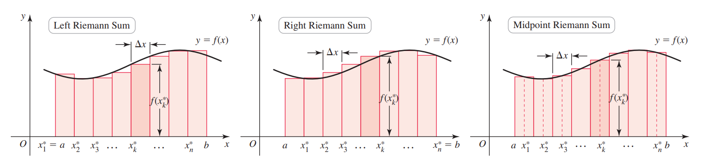

Goal: Understand how to approximate the area under a curve using Riemann sums and how this leads to the exact area via a limit.
1. Introduction to Riemann Sums
Suppose \( f(x) \) is continuous and \( f(x) \geq 0 \) on the interval \( [a,b] \). We want to compute the area between the graph of \( y = f(x) \) and the \( x \)-axis.
We approximate this area using the following steps:
- Divide the interval \( [a,b] \) into \( n \) equal subintervals, each of width \[ \Delta x = \frac{b-a}{n}. \]
- Choose a sample point \( x_k^* \) in each subinterval.
- Construct rectangles with height \( f(x_k^*) \) and width \( \Delta x \).
- The area of the \( k \)-th rectangle is \[ f(x_k^*) \cdot \Delta x. \]
-
Adding all rectangles gives the Riemann sum:
\[ A_n = \sum_{k=1}^{n} f(x_k^*) \, \Delta x. \]

Definition: If \( f(x) \) is continuous on \( [a,b] \), then the exact area under the curve is defined as the limit of the Riemann sums:
This limit exists when \( f(x) \) is continuous, and it is used as the definition of the true area under the curve.
2. Examples
Example 2.1: Area Using Riemann Sum
We consider the area enclosed by the line \( y = 2x \), the line \( x = 3 \), and the \( x \)-axis.
Of course, this area can be computed geometrically as the area of a triangle:
We now compute the same area using a Riemann sum.
Solution:
Divide the interval \( [0,3] \) into \( n \) equal subintervals. Then
Using right endpoints, the sample points are
The function values are
The Riemann sum is
Using the formula \( \sum_{k=1}^{n} k = \frac{n(n+1)}{2} \), we get
Taking the limit as \( n \to \infty \),
This agrees with the geometric result, confirming that the exact area is \( A = 9 \).
Example 2.2: Area Under the Parabola \(y = x^2\)
We consider the area enclosed by the parabola \( y = x^2 \), the line \( x = 1 \), and the \( x \)-axis.
Geometrically, there is no simple formula like a triangle, so we compute the area using a Riemann sum.
Solution:
Divide the interval \( [0,1] \) into \( n \) equal subintervals:
Using right endpoints, the sample points are
Function values at these points are
The Riemann sum is
Using the formula \( \sum_{k=1}^{n} k^2 = \frac{n(n+1)(2n+1)}{6} \), we get
Taking the limit as \( n \to \infty \):
Therefore, the exact area under the parabola from \( x = 0 \) to \( x = 1 \) is \( A = \frac{1}{3} \).